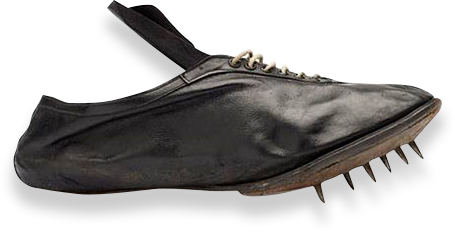
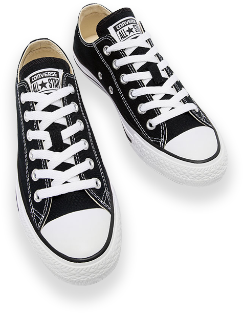
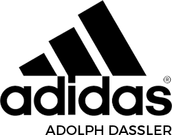
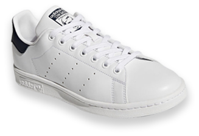
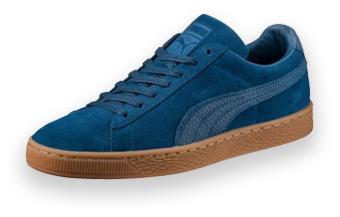
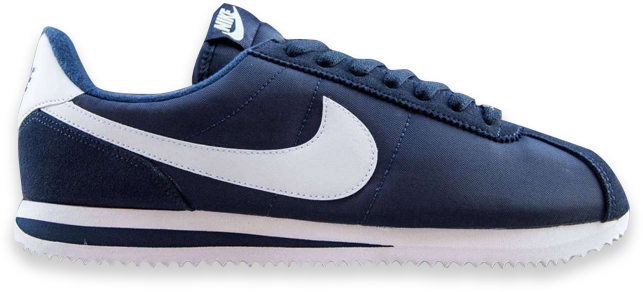

Le caoutchouc, découvert au XVème siècle est un élément essentiel qui a
permis la création de baskets, qui sont, grâce à ce matériau silencieuses
et adhérentes avec la semelle en caoutchouc. La première chaussure sportive
est apparue en 1868, créée par l’entreprise américaine Candde Manufacturing à New Haven.
1868
candde
manufacturing

La Converse Rubber Shoe Company est créée en 1908 par Marquis Mills (1861-1931),
à Malden (Massachusetts) au nord de Boston.
« Converse » était le nom de sa mère. Les premières productions de l’entreprise sont de grosses bottes fourrées à semelle de caoutchouc permettant de protéger les pieds durant les rudes hivers de la Nouvelle-Angleterre. Leur prix, qui était alors de 5$, a fait d’elle la chaussure la plus utilisée dans les centres pénitentiaires des États-Unis. En 1910 4000 souliers par jour sortent alors de l’usine, mais pour se diversifier, Mills Converse décide de se tourner vers les chaussures de sport. En 1915, il lance la fabrication d’une paire de chaussure de tennis.
« Converse » était le nom de sa mère. Les premières productions de l’entreprise sont de grosses bottes fourrées à semelle de caoutchouc permettant de protéger les pieds durant les rudes hivers de la Nouvelle-Angleterre. Leur prix, qui était alors de 5$, a fait d’elle la chaussure la plus utilisée dans les centres pénitentiaires des États-Unis. En 1910 4000 souliers par jour sortent alors de l’usine, mais pour se diversifier, Mills Converse décide de se tourner vers les chaussures de sport. En 1915, il lance la fabrication d’une paire de chaussure de tennis.
1908
converse

En 1924, les frères Rudolf et Adolf Dassler fondent ensemble la Schuhfabrik
Gebrueder Dassler, une société de chaussures de sport. Après la deuxième guerre
mondiale et suite à de nombreux problèmes liés aux femmes des deux frères, les
Dassler liquident la société en 1948 et la divisent en deux parties égales. Adolf,
surnommé Adi, baptisa son entreprise ADIDAS (pour ADI DASsler), tandis que Rudolf
choisi le nom PUMA, facile à prononcer dans toutes les langues. Les sièges sociaux
des deux multinationales concurrentes est toujours dans la même ville de Herzogenaurach !
1948

VS
les frères dassler


Nike est le plus grand producteur de vêtements et de chaussures de sport.
La marque Nike est immédiatement reconnaissable dans le monde, en particulier
son logo Swoosh et son slogan «Just Do It». La société fut fondée en Oregon en
1964 sous le nom de Blue Ribbon Sports ; le nom fut changé en Nike en 1971.
La société entra en bourse en décembre 1980.
En 1984, le joueur de basketball Michael Jordan signa un contrat de sponsoring
et Nike lança le premier modèle de la chaussure de sport Air Jordan. La NBA
interdit la chaussure, et la Air Jordan devint un catalyseur pour l’essor de Nike.
1964
blue ribbon sport
